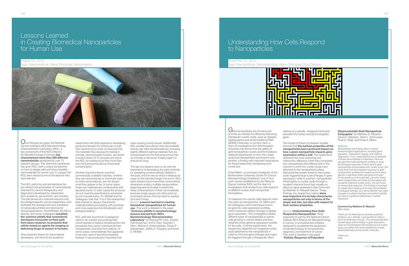

Technical reports are frequently long and complicated documents. The document design of these documents helps the different readers who will use the report find the information that matters to them. Everything from page numbers to document headings and subheadings can make a difference in the effectiveness of a technical report.
Use the strategies below to use document design to make your report polished, professional, and easy to read.
Apply These Strategies to Your Project
- Use standard margins (generally 1") on all sides of your document. Keep your paper to letter size (8.5" by 11").
- Choose a font size that is large enough to read without magnification.
- Label each page with a page number and relevant details on the document.
- Avoid fonts in all caps, since they decrease readability. See the LinkedIn Learning video “Avoid All Caps and Underlined Text” for more information. The video is free with your VT login. Follow these instructions to login.
- Arrange your text so that it uses flush left, ragged right alignment. See Centered Text Is Harder to Read and the F-Shaped Reading Pattern.
- Apply the design principles of Contrast, Repetition, Alignment, and Proximity (CRAP) to improve your document design. See Put CRAP in Your Document Design.
- Structure your document so the information is well-organized and easy to navigate. See Chunking Your Paragraphs into Readable Bites and Information-Rich Signposts Help Readers.
- Add strong headings and subheadings to your document. See Using Strong Phrasing in Your Headings and the section on “Titles and Headings” in Chapter 11 of Markel and Selber’s Technical Communication (page 275–277).
- Integrate images smoothly in your documents and include appropriate labels and documentation for all images. See Adding Images to Your Text and Chapter 12 of Markel and Selber’s Technical Communication.
- Use the Sample Recommendation Report as an exemplar of document design. You can follow the practices in that report as you design your own.
Photo credit: NanoOncology__136-137 by victorpuntes on Flickr, used under a CC-BY-SA 2.0 license.